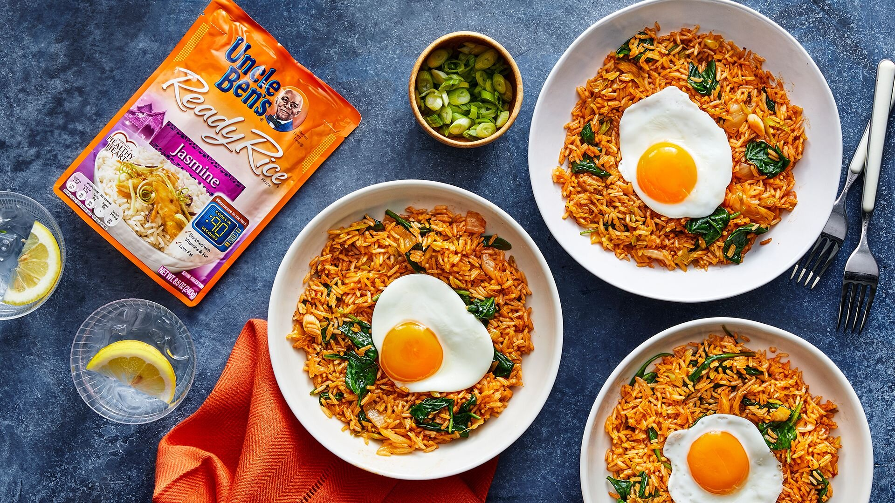

Kimchi Fried Rice Recipe

Description
The recipe involves two simple instructions.
Kimchi fried rice or kimchi-bokkeum-bap is a variety of bokkeum-bap, a popular dish in South Korea.
Ingredients
- 1½ tablespoons toasted sesame oil
- 1 cup chopped green onions
- 2 cloves garlic, minced
- ¾ cup chopped kimchi, drained and 1/4 cup juice reserved
- 2 (8.8 ounce) pouches UNCLE BEN'S® READY RICE® Jasmine
- 1 (5 ounce) package fresh baby spinach
- 1½ tablespoons reduced-sodium soy sauce
- 2 teaspoons gochujang (Korean hot pepper paste)
- 2 teaspoons sesame oil
- 4 eggs
Steps
- Heat 1 1/2 tablespoons sesame oil in a large nonstick skillet over medium high. Add green onions and garlic; saute 1 minute. Add chopped kimchi and Jasmine Rice; saute 4 minutes. Gradually add fresh spinach, stirring until spinach wilts, about 2 minutes. Stir in kimchi juice, soy sauce, and gochujang. Remove from heat and set aside.
- Heat remaining sesame oil in a medium nonstick skillet over medium heat. Carefully crack eggs into hot oil and fry until desired degree of doneness. Place 1 egg on top of 1 cup of fried rice and serve immediately.